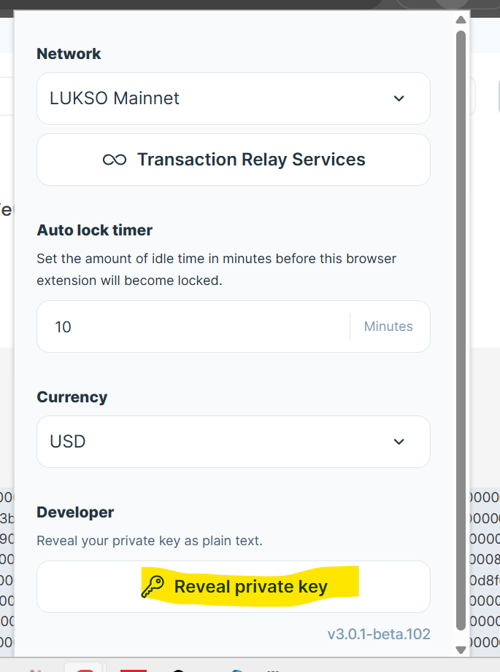
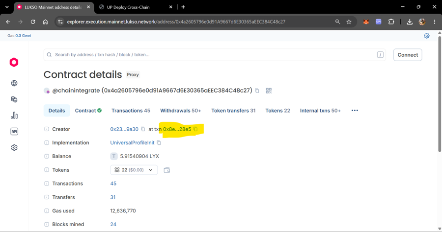
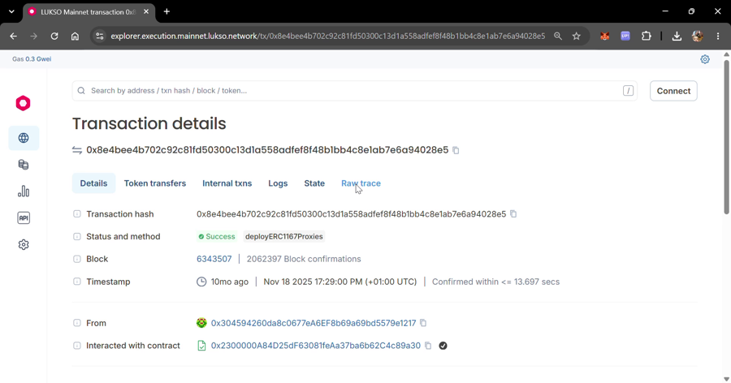
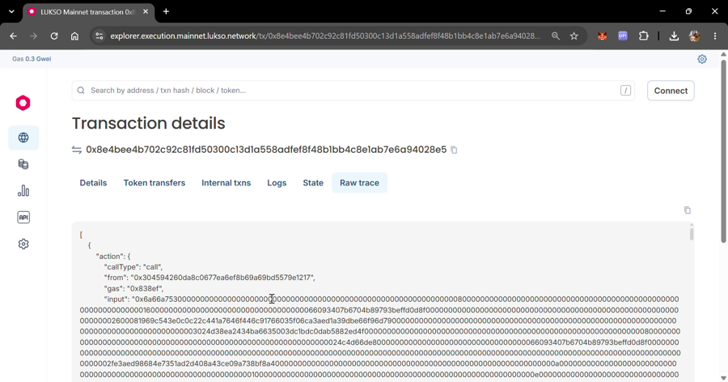
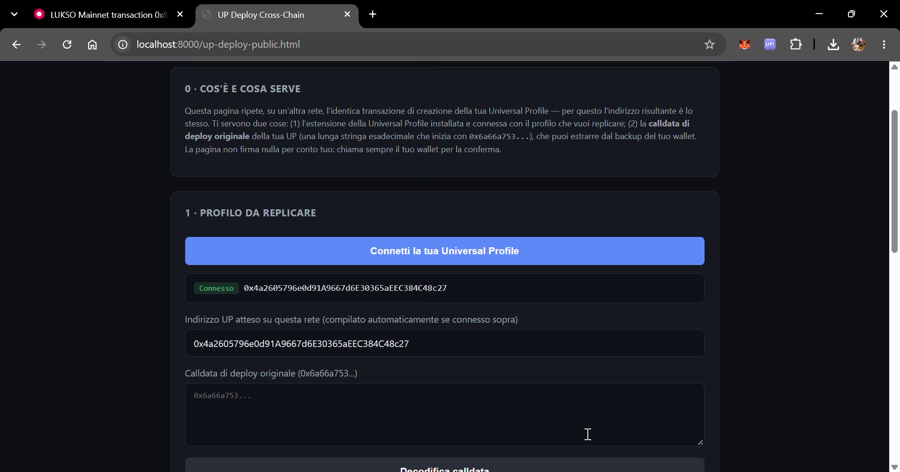
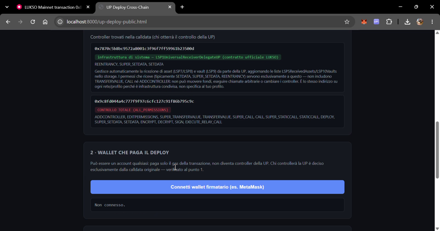
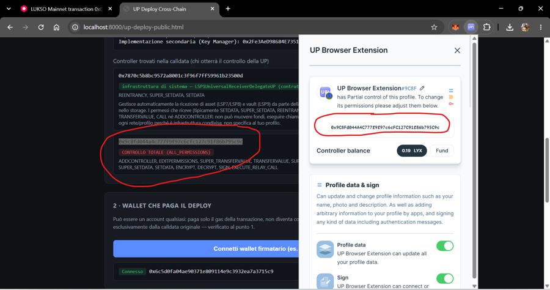

What this is. Your Universal Profile (UP) was created on LUKSO through a deterministic factory contract. Because the factory is deployed at the same address on every EVM chain, replaying your exact original creation transaction on another chain produces a contract at the same address there too. This page explains the mechanism and walks through doing it safely, using the companion tools linked at the bottom.
It is not a simple function of "controller + salt". Your UP was created via LUKSO's LSP23LinkedContractsFactory, deployed at the same address (0x2300000A84D25dF63081feAa37ba6b62C4c89a30) on every chain where LUKSO has published it. The factory call includes:
ALL_PERMISSIONS on the new profile.All of this is hashed together (keccak256) to form the real salt used in CREATE2, combined with the hash of the minimal-proxy bytecode pointing at the Universal Profile implementation. The resulting address depends on the entire original transaction — not on any single field in isolation.
This is why only the exact original calldata reproduces the same address: the controller with full control isn't special on its own — it's simply the address that particular calldata already names. Change the calldata (even to name a different controller) and you get a different address entirely.
You'll need this key later, in step 8, to operate your profile on the new chain — it's simplest to get it out of the way first. Unlock the Universal Profile browser extension, click the gear icon (Settings) top-right, scroll all the way down to the Developer section, and click Reveal private key. Enter your extension password when asked, and the key is shown as plain text.

Open your UP's address on the LUKSO mainnet explorer, on its Details tab. Find the Creator row — it shows the creator's address "at txn" followed by a transaction hash. Click that transaction hash link: it takes you straight to the creation transaction.

Once you're on that transaction's page, switch to its Raw trace tab.

deployERC1167Proxies, sent to the factory address. Open "Raw trace" from here.In the raw trace, find the call field (the raw hex, starting with 0x6a66a753...). Copy the whole string. This is your deployment calldata.

call field is the deployment calldata.Open the Deploy tool and click Connect your Universal Profile in panel 1. Approve the connection in the extension popup — this only reads your address, it never asks for a private key. Once connected, the tool shows your address and pre-fills the "expected address" field with it.

The calldata is filled in automatically after you connect (otherwise, paste the one you copied in step 3). It will show you the address this calldata predicts for your UP on any chain, and — critically — it will decode and display every controller named in the calldata, including which one gets ALL_PERMISSIONS.

ALL_PERMISSIONS (red) — that second one is what you need to hold the key for.The tool shows the address that receives ALL_PERMISSIONS — this is called the controller address, because it's the account that will control the profile after the deploy. The check to make here isn't generically "does this match the key I extracted" — it's whether this is the same account that your Universal Profile browser extension itself labels as the controller for this profile, and that this is the very account you extracted the private key from in step 1 (not a different one also sitting in the extension). If your Universal Profile has ever had more than one controller connected to it over time (for example, from reinstalling a wallet extension, or connecting a new device), make sure it's this specific controller — the one the extension shows for this profile — not just "a" controller that currently has access. They can look functionally identical (same permissions) while only one of them reproduces the same address on another chain.

ALL_PERMISSIONS address the tool found matches the address your own wallet extension shows as the controller of this specific profile — same string, character for character.Still on the Deploy tool: connect any wallet to pay gas (it does not need to be the controller — it only pays the transaction fee), select the destination network, and run the built-in checks. The tool verifies the predicted address again, checks nothing already exists there, estimates gas, and — after the transaction confirms — verifies the deployed bytecode matches exactly before calling it a success.
Import the private key you extracted in step 1 into MetaMask (or your wallet of choice) — this is standard "import account" functionality in any wallet. From there, use the Test tool to confirm the controller actually operates the profile — it writes a timestamp on-chain through the Key Manager and reads it back. Once that works, you can also use the Send tool to transfer native currency from the profile to another address, signed by that same controller.
Di cosa si tratta. La tua Universal Profile (UP) è stata creata su LUKSO tramite un contratto factory deterministico. Poiché la factory è deployata allo stesso indirizzo su ogni rete EVM, ripetere esattamente la transazione di creazione originale su un'altra rete produce un contratto allo stesso indirizzo anche lì. Questa pagina spiega il meccanismo e guida attraverso il procedimento in sicurezza, usando gli strumenti collegati in fondo.
Non è una semplice funzione di "controller + salt". La tua UP è stata creata tramite LSP23LinkedContractsFactory di LUKSO, deployata allo stesso indirizzo (0x2300000A84D25dF63081feAa37ba6b62C4c89a30) su ogni rete dove LUKSO l'ha pubblicata. La chiamata alla factory include:
ALL_PERMISSIONS sul nuovo profilo.Tutto questo viene hashato insieme (keccak256) per formare il salt reale usato in CREATE2, combinato con l'hash del bytecode minimal-proxy che punta all'implementazione della Universal Profile. L'indirizzo risultante dipende dall'intera transazione originale — non da un singolo campo isolato.
Per questo solo la calldata originale esatta riproduce lo stesso indirizzo: il controller con il controllo totale non ha nulla di speciale in sé — è semplicemente l'indirizzo che quella specifica calldata già nomina. Cambiare la calldata (anche solo per nominare un controller diverso) produce un indirizzo completamente diverso.
Ti servirà più avanti, al passo 8, per operare il profilo sulla nuova rete — conviene toglierla di mezzo subito. Sblocca l'estensione Universal Profile, clicca sull'icona a rotella (Settings) in alto a destra, scorri fino in fondo alla sezione Developer e clicca Reveal private key. Inserisci la password dell'estensione quando richiesto: la chiave viene mostrata in chiaro.
Apri l'indirizzo della tua UP sull'explorer di LUKSO mainnet, nella scheda Details. Trova la riga Creator — mostra l'indirizzo del creatore "at txn" seguito da un hash di transazione. Clicca su quel link dell'hash: ti porta direttamente alla transazione di creazione.
Una volta sulla pagina di quella transazione, passa alla scheda Raw trace.
deployERC1167Proxies, inviata all'indirizzo della factory. Da qui apri "Raw trace".Nel raw trace, trova il campo call (l'esadecimale grezzo, che inizia con 0x6a66a753...). Copia l'intera stringa. Questa è la tua calldata di deploy.
call è la calldata di deploy.Apri la pagina di Deploy e clicca Connetti la tua Universal Profile nel pannello 1. Approva la connessione nel popup dell'estensione — questo passaggio legge solo il tuo indirizzo, non chiede mai una chiave privata. Una volta connesso, lo strumento mostra il tuo indirizzo e precompila il campo "indirizzo atteso" con quello.
La calldata viene compilata in automatico dopo la connessione (altrimenti incolla quella copiata al passo 3). Ti mostrerà l'indirizzo che questa calldata predice per la tua UP su qualsiasi rete e — punto cruciale — decodificherà e mostrerà ogni controller nominato nella calldata, incluso chi riceve ALL_PERMISSIONS.
ALL_PERMISSIONS (rosso) — di quest'ultimo devi possedere la chiave.Lo strumento mostra l'indirizzo che riceve ALL_PERMISSIONS — si chiama indirizzo del controller, perché è l'account che controllerà il profilo dopo il deploy. Il confronto da fare non è genericamente "corrisponde alla chiave che ho estratto" — è se questo è lo stesso account che la tua estensione del browser Universal Profile indica esplicitamente come controller di questo profilo, e che sia proprio quell'account (non un altro presente nell'estensione) da cui hai estratto la chiave privata al passo 1. Se la tua Universal Profile ha mai avuto più di un controller collegato nel tempo (ad esempio dopo aver reinstallato un'estensione wallet, o collegato un nuovo dispositivo), assicurati che sia proprio questo controller — quello che l'estensione mostra per questo profilo — non semplicemente "un" controller che al momento ha accesso. Possono sembrare funzionalmente identici (stessi permessi) mentre solo uno dei due riproduce lo stesso indirizzo su un'altra rete.
ALL_PERMISSIONS trovato dallo strumento corrisponde all'indirizzo che la tua estensione wallet mostra come controller di questo specifico profilo — stessa stringa, carattere per carattere.Sempre sulla pagina di Deploy: collega un wallet qualsiasi per pagare il gas (non deve essere il controller — paga solo la commissione della transazione), scegli la rete di destinazione ed esegui i controlli integrati. Lo strumento riverifica l'indirizzo predetto, controlla che non esista già nulla lì, stima il gas e — dopo la conferma della transazione — verifica che il bytecode deployato corrisponda esattamente prima di dichiarare il successo.
Importa in MetaMask (o nel wallet che preferisci) la chiave privata estratta al passo 1 — è la normale funzione "importa account" di qualsiasi wallet. Da lì usa la pagina di Test per confermare che il controller operi davvero il profilo — scrive un timestamp on-chain tramite il Key Manager e lo rilegge. Una volta verificato, puoi anche usare la pagina di Invio per trasferire valuta nativa dal profilo a un altro indirizzo, firmato dallo stesso controller.